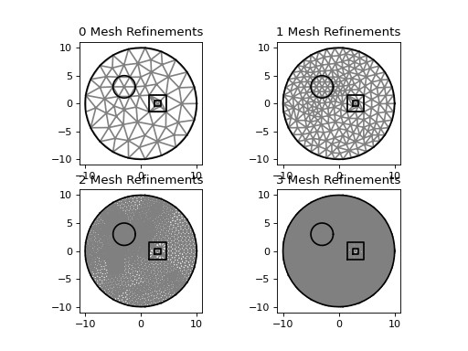

Mesh Refinement¶
Sometimes the meshes generated will be too large (not enough spatial resolution) leading to low quality solutions. To solve this: fish2eod provides domain level mesh refinement highlighted here.
"""Example of a mesh refinement procedure."""
import matplotlib.pyplot as plt
from fish2eod import QESModel, Circle, Rectangle
class SimpleModel(QESModel):
"""Define a simple model with a circular background and a few geometric objects."""
def create_geometry(self):
bg = Circle((0, 0), 10)
r1 = Rectangle.from_center((3, 0), 3)
r2 = Rectangle.from_center((3, 0), 1)
c = Circle((-3, 3), 2)
self.model_geometry.add_domain('bg', bg, sigma=1)
self.model_geometry.add_domain('fg', r1, sigma=1)
self.model_geometry.add_domain('fg2', r2, sigma=1)
self.model_geometry.add_domain('fg3', c, sigma=1)
"""
Highlight how mesh refinement works by remeshing the background and fg3 domains.
Each iteration a different number of refinements is performed increasing mesh resolution.
"""
plt.figure()
for n_refine in range(4):
model = SimpleModel()
model.compile(refine_domains=['bg', 'fg3'], n_refine=n_refine)
plt.subplot(221+n_refine)
plt.title(f"{n_refine} Mesh Refinements")
model.plot_mesh()
model.plot_geometry(color='k')
(Source code, png, hires.png, pdf)
{kind=link}
{kind=link}

The parameters refine_domains and n_refine specify the which domains to refine and how many times the refinement
should be done. Each refinement operation breaks the mesh elements into smaller pieces so a high n_refine provides
a higher resolution mesh.
The refine_domains and n_refine parameters can be directly specified to Model.compile method or passed as
additional parameters to the IterativeSolver during parameter sweeps.